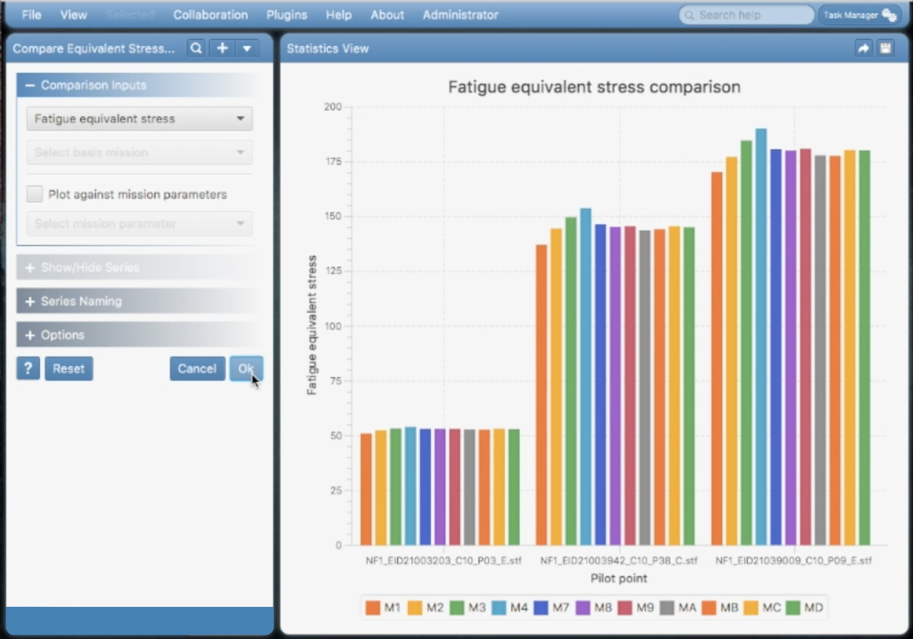
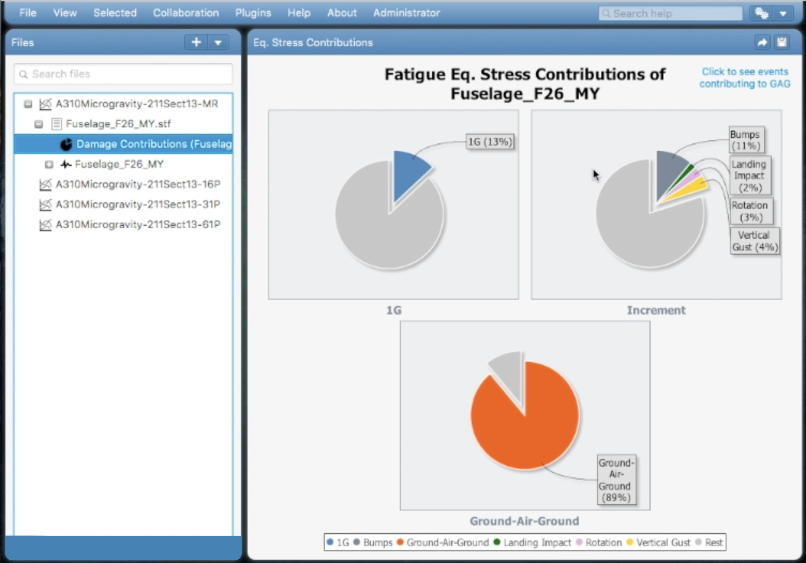

Equinox is a data analysis and visualization digital-twin-platform. It aims at creating a digital representation of the engineering structure. Equinox has the following major capabilities:
- Parameterized spectrum analysis,
- 2D and 3D data visualization,
- Search engine for central digital-twin database,
- Collaboration (file and view sharing),
- Automatic report generation,
- Automation API (using XML or JSON instruction files),
- Plugin extensions via automation API.
Screenshots below demonstrate some of the analysis and data visualization capabilities of Equinox. Double-click on a screenshot to see a larger image.
 

×

You can download the installation package for your operating system by clicking the download links below.
The platform is composed of 6 containerized services, each with its specific scope as follows:
- - Serves digital-twin metadata from the central database,
- - Enables collaboration among client applications of the platform,
- - Performs data and structural fatigue analyses,
- - MySQL relational database. It stores the metadata of the digital-twin,
- - Stores object data in a structured directory system,
- - Checks and updates all services from Docker Hub.
×

As seen in the figure, all service containers are running on top of EC2 (Elastic Compute Cloud) instances in AWS (Amazon Web Services) cloud. The EC2 instances are placed inside auto-scaling groups which scale the service up or down on multiple AWS Availability Zones, based on traffic.
At the outer layer, load-balancers distribute incoming traffic to the auto-scaling group of each internet-facing service. The database server is not internet-facing therefore its load-balancer is distributing incoming traffic from private subnets on multiple availability zones.
Equinox Digital Twin Platform has been designed and developed by Murat Artim. Murat Artim is an enterprise architect in aerospace industry. He has more than 10 years of industry experience in enterprise, web and distributed applications.